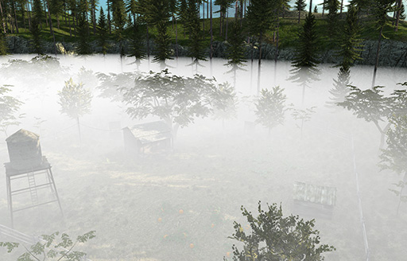
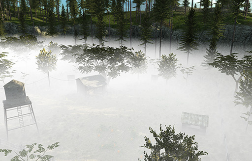

Fog Spaces
In the C4 Engine, a fog space is a node that causes fog to be rendered in a scene. It's actually a half-space because all space is divided in half by a single boundary plane, and fog is rendered on one side of the plane.
Creating a Fog Space

A fog space is placed in a world using the Fog Space tool in the Atmosphere Page (shown to the right) in the World Editor under the Object tab. This tool draws a rectangular region that represents the top boundary of a fog volume. Fog is rendered everywhere beneath the entire plane containing this rectangle in the zone to which the fog space belongs. Fog is not rendered above the plane, but the plane can always be raised above the whole scene if the desired effect is to fog everything. When the camera is above the fog plane, the rectangular plate representing the fog space must be visible in order for fog to be rendered, so it should be drawn large enough to cover the entire area that should be affected by fog. When the camera is below the fog plane in a zone affected by the fog space, fog is always rendered.
The boundary plane of a fog space does not have to be horizontal and can placed in any orientation. An example use of a vertical fog plane is one that coincides with a doorway leading into a fogged area from an unfogged area.
Density Functions
{kind=link}

{kind=link}

In the Node Info dialog for a fog space, a fog color and density function can be selected. A fog space can use a constant fog density or a linear fog density. The difference is shown in the images to the right. When constant density is used, the density of the fog is the same everywhere beneath the boundary plane. When linear density is used, the density of the fog is zero at the boundary plane and increases linearly with distance beneath the plane. Typical density values for both modes are usually in the range of 0.001 to 0.1, where higher densities correspond to thicker fog.
Fog Space Settings
A fog space node can be configured under the Fog tab in the Node Info window. The specific settings are described in the following table.
|
Setting |
Description |
|
Fog color |
The color of the fog space. When the amount of fog is calculated at each pixel, the fraction of light that does not make it through the fog is replaced by this color. |
|
Fog density |
The constant density of the fog, or the rate at which the linear density increases. This is usually a small value less than 1.0. |
|
Density function |
Selects whether the fog uses a constant density function or a linear density function. |
|
Apply distance occlusion |
An optimization for thick fog that culls objects that are fully fogged based on their distance from the camera in the direction parallel to the fog plane. This should be enabled only if the fog ever becomes thick enough in the scene so that objects can't be seen beyond some horizontal distance. |
|
Apply depth occlusion |
An optimization for thick fog that culls objects that are fully fogged based on their distance from the camera in the direction perpendicular to the fog plane. This should be enabled only if the fog ever becomes thick enough in the scene so that objects can't be seen beyond some vertical distance. |
|
Occlusion fog intensity |
If either distance occlusion or depth occlusion is enabled, this value specifies the fog intensity at which objects are considered invisible. Higher values correspond to thicker fog being required to obscure an object. For bright fog colors, this value can usually be lower because the human eye cannot distinguish among bright colors as well as dark colors. |
Using a Fog Space in Multiple Zones
A single fog space may be used to apply fog in multiple zones. A fog space automatically applies to the zone containing it in the transform hierarchy. Each zone node has a built-in connector labeled %Fog that can be connected to a fog space in another zone. Every zone connected to a particular fog space is affected by the fog as long as the camera can see the fog plane or is inside the fog itself. It is okay for a fog space to extend beyond the boundary of its containing zone.
Only one fog space should be visible at once for each perspective (primary, reflection, and refraction). If more than one fog space can be seen by the camera in a single perspective, then any one of them could be chosen to be applied to the scene, and this could change with the camera position.
See Also
FogSpaceclass